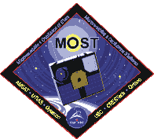
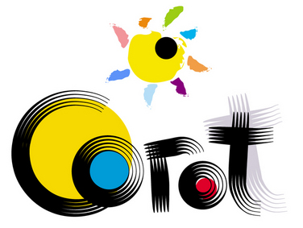
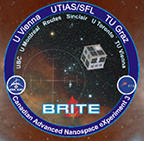

Links
Kepler:
+ Kepler - official NASA website
+ Kepler - Latest News
+ Kepler Guest Observer homepage (GO)
+ Kepler Director's Discretionary Targets (DDT)
Kepler Asteroseismology:
+ KASC - Kepler Asteroseismic Science Consortium
+ KASOC Kepler Asteroseismic Sci. Operations Center
+ KASC - WG#2 Oscillations in Clusters
+ KASC - WG#9 Pulsations in binary and multiple stars
Public Kepler databases:
+ KIC - Kepler Input Catalog description
+ MAST - Multimission Archive at STScI Kepler database
+ NStED NASA/IPAC/NExSci Star & Exoplanet Database
+ Kepler Eclipsing Binary Star Catalog
For the public:
Kepler Mission @ Wikipedia
Kepler @ Twitter
Kepler Mission @ Facebook
Kepler Mission
NASA's Kepler blog
systemic exoplanet blog
Interested in finding planets around other stars?
Start hunting for planets in public Kepler data!
Planet Hunters Kepler and 'Citizen Science'
Related space missions:

MOST Microvariability & Oscillations of STars

CoRoT COnvection, ROtation & planetary Transits
PLATO PLAnetary Transits & Oscillations of stars

BRITE - Constellation